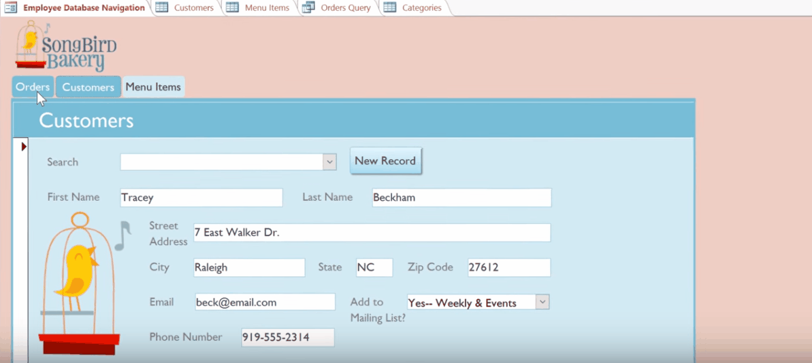
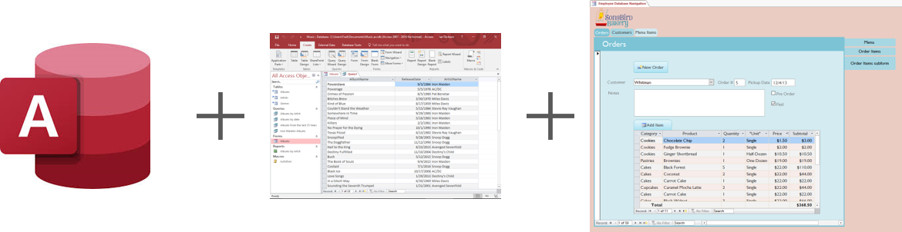
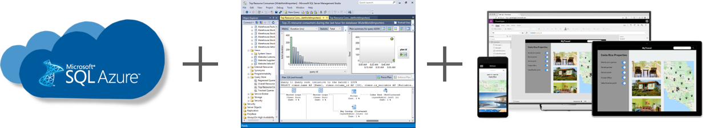
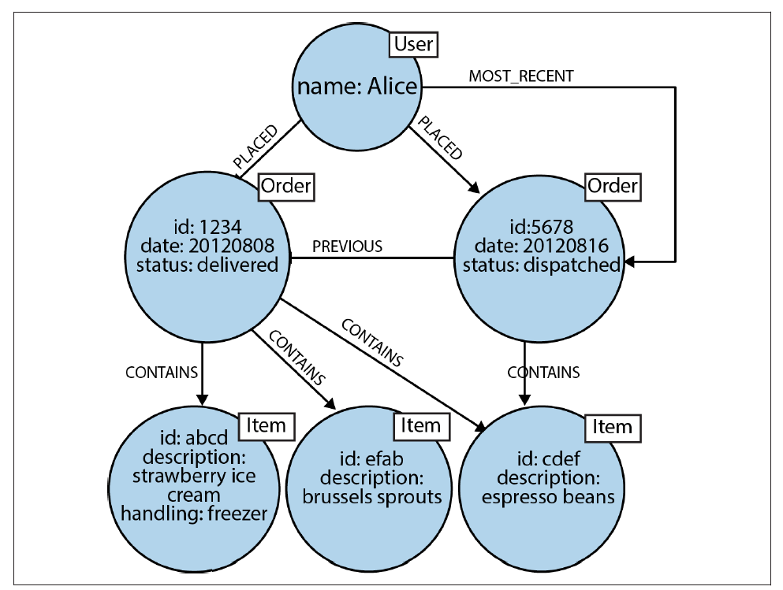

Database Overview¶
Do you (or your client) have data stored across so many files you can't remember where they are? Are you scrambling to pull together information when requested, constantly months behind in reporting, or finding yourself dumping data from multiple sources into a single spreadsheet for analysis? If so, it might be time for a database. However, there are complexities to consider when setting up and managing a database.
This tutorial will
- introduce you to databases,
- describe available database solutions, and
- help you select the right database for your needs.
Introduction to Databases¶
A database is simply an organized store for information. In a relational database, data are stored as rows and columns in tables; relationships are defined between tables. You might have tables for customers, products, and orders. Customers place orders which include products. The database helps you get the right products to the right customers.
In addition to relational databases, graph databases and NOSQL (Not Only Structured Query Language) databases are available.
How the data are stored is often less important than how the data are accessed. The primary reason you're developing a database is probably to make data easier to access, analyze and report. When choosing and designing a database, you'll need to pay as much attention to how the user will interface with the database as the database solution itself.
If you're simply looking for data analysis and visualization (think: Tableau), check out our Introduction to Data Visualization.
Interacting with a database¶
Most users will interact with a database through a navigation form. The navigation form surfaces the important functionality of the database, including entering data, querying data, and generating reports.
Here's an example navigation form for a bakery's order database created in Microsoft Access.

The navigation form is set up after the database is configured by the database administrator (DBA; this may be you, someone on the Metrics Service Line, or an outside contractor). The navigation form--as well as other forms, queries, and reports that are made available to the user by the DBA--make data accessible to users while protecting the integrity of the database
Forms¶
Data is entered into the database primarily through forms (it can be imported as well). Forms can be made available through the Navigation Form or through individual forms designed and made available by the DBA.
Queries¶
Queries allow you to search for and update records in the database. Want to know how many orders were placed yesterday? How many blueberry muffins you've sold this year? You'll need a query for that.
Reports¶
Reports are queries or collections of queries that can be batched together and run periodically. You might have a standard report that is produced each quarter or a ready-made report to provide real time information to your boss when requested. Reports must also be set up and made available by the DBA.
A database solution involves multiple components¶
A database solution (aka database management system; DBMS) will include these key components
- Database Software and Hosting Platform: The database software runs the database. The database and the database software will be hosted either on a local server or on the cloud.
- Database Management Client: The database management client is the interface that the DBA will use to configure the database and manage access for users. The database client typically uses SQL (Structured Query Language) to interact with the database.
- User Interface and Analysis Platform: The user interface allows users to access the data while the analysis platform allows the user to gain insights from the data. Often, these are combined.
To illustrate, below are three options for a database solution that you might consider.

Example 1: Microsoft Access¶
Microsoft Access is an all-in-one database solution from the '90s. It lacks many features that some would deem critical, but for lightweight and desktop-based database solutions, it's hard to beat the out-of-the-box functionality for low-tech users. Similar, more modern options are available as cloud-based, subscription services.

Example 2: Microsoft Azure SQL Database + SQL Server Management Studio + Microsoft PowerApps¶
A cloud-based solution that offers great customization, if you're tech-savvy enough to configure and maintain it. You don't have to be a software engineer, but don't expect it to be easy. Amazon, IBM and Oracle offer similar solutions.

Example 3: MySQL + MySQL Workbench + Custom Web Application¶
This open source solution may be your go-to if you're willing to invest in a web-application. Many open source solutions are available.
Project Spotlight: The Registry for the Monarch Butterfly Habitat Exchange was built on this stack.
Database Options¶
There are many choices when it comes to databases, each with its own advantages and disadvantages.
All-in-one, low tech solutions¶
These are your options if you don't have a tech guru on the team and don't have enough budget to hire one.
Free(ish) and Mostly Desktop-Based¶
Microsoft Access and OpenOffice Base are good entry-level options. OpenOffice Base is free but has fewer features and less support than Microsoft Access.
Microsoft Excel, especially if paired with custom VBA Forms and Modules, can even serve as a database but has limitations. If you'd prefer a cloud-based solution, Google Sheets paired with Google Forms might even work. Even though these are not 'databases' per se, you may be surprised by how much easier data management is when you separate the data storage functionality from the data entry and data viewing functionality.
Cheap(ish) Cloud-based Subscription Services¶
The need for data storage and analytics solutions to serve low-tech users has led to a boom in cloud-based solutions like AirTable, QuickBase, TeamDesk, Knack, and Sonadier. The price scales with increasing storage capacity and number of users, from cheap ($5/month) to not-so-cheap ($500/month or more).
The data visualization powerhouse Tableau offers a data management add-on for $5/mo that might meet your needs if you're mostly focused on visualization and are already a Tableau subscriber.
Salesforce and other CRMs (Customer Relationship Management software) also combine data management and analytics in a way that could serve as a solution for your needs.
Finally, one notable desktop application is Notion, which is a do-everything app with a cult following that provides some database-like functionality.
Solutions for the more technical crowd¶
Venture into this territory and you'll want to make sure you have the technical chops on board to configure and maintain these options.
Open Source Database Software¶
PostgreSQL, MySQL, and MariaDB are examples of open source (free) database solutions. Neo4j is a long-time standard for graph databases. While these are robust, scalable database solutions used by many large corporations, they are not designed for your everyday desk jockey. These open source solutions are often paired with a web-based interface. If you are working with a web developer and have the budget for them to design the forms, queries and reports you need you'll likely choose one of these open source options. Don't forget you'll probably need to hire them again when you want to make changes or when the software reaches its End Of Life (EOL).
Cloud-based Scalable Services¶
Cloud-based options are offered by Amazon RCD, Microsoft Azure, IBM Db2 and Oracle Cloud Services. Your data now lives on the cloud. Price scales with use, and entry-level tiers can be very cheap, but you will have to provide a credit card and make sure the charges don't get out of hand.
To get to your data, you'll need an application--either a custom web app or a desktop app you build using a service like Microsoft PowerApps, FileMaker, Oracle Forms, or Appian. These "low code" application platforms allow you to develop custom solutions without a team of software engineers, but do require some serious training.
Enterprise Database Solutions¶
Microsoft, IBM, and Oracle all sell enterprise database solutions. Expect to pay over $1,000 per month. You can get Microsoft SQL Server Express for free but make sure its limited set of features will work for you.
Database Clients¶
For these more technical solutions, you'll need a database management client. Some database solutions come with a preferred client, such as Microsoft's SQL Server Management Studio and Azure Data Studio, Oracle's SQL Developer, PostreSQL's pgAdmin, and MySQL's MySQL Workbench. However, you're not stuck with these options, some of these can be used for other databases, while a number of popular free alternative options exist including SQuirrel SLQ, DataGrip, or even VSCode with mssql extension (for MySQL databases; however see Azure Data Studio as a better solution built from the VSCode platform).
For Python¶
If you're working in Python, know that there are APIs for most of the open source and cloud-based database solutions. For example, psycopg2 is the API for Postrgres and Ibm-db is the API for IBM's DB2 cloud-based database.
I'd recommend playing around with SQLite (sqlite3 package), which comes with the base Python distribution, to familiarize yourself with using databases in your applications. You can access and manipulate your database in a Jupyter Notebook using the appropriate API and pandas. Use the pandas.read_sql command to read the results of a SQL query into a pandas dataframe for further analysis.
For a graph database solution, Neo4j has multiple APIs for Python, try py2neo.
How to Choose?¶
With so many options, how do you choose? This section will help you pick the right one.
Budget¶
Consider both the cost of the software itself and the cost of configuring and maintaining the database.
Scalability¶
Unless you're dealing with *Big Data*, you won't need to worry about the database growing too large to fit on a single server. The only likely exception would be if attempting to store geospatial data within a relational database outside of ArcGIS. If you go with a cloud-based solution you can scale as much as you want, provided you can pay for it.
Graph databases and NOSQL solutions are more robust to changes in their schema, if you're worried about changes to the data that will be stored in your database overtime.
Hosting & Integration¶
If the database will be hosted and managed by the client or their website manager, your options will likely be limited to those that integrate with their existing systems. Work with them when selecting a database and during database design.
In most other cases, the database will live on the client's local server (unless you picked a cloud-based alternative).
Maintenance & Support¶
Who will maintain the database over time? If it's the client, make sure they are comfortable with the solution.
Who will provide support if something crashes or the client needs a new type of report developed? If it's you, make sure you are comfortable with the solution.
Keep in mind that paying a contractor to set up a cool web-based database and interface will likely require paying a contractor to maintain that database and interface periodically over time.
Graph Databases¶
A graph database stores data in a graph, which is not the 'graph' with a x- and y-axis, but rather a collection of nodes (sometimes called vertices) and relationships (sometimes called edges). Instead of a table of products, orders, and customers; each would be represented as a node and relationships would be defined to connect products to orders and orders to customers. Graph databases are more flexible than relational databases, and because relationships are stored directly in the database, they can be more performant for evaluating relationships specifically.

NOSQL¶
NOSQL (Not Only SQL) databases store disconnected and unstructured data through a variety of strategies. Some definitions of NOSQL include graph databases because graph databases do not use SQL. NOSQL encompasses a large variety of database technologies that might suit your needs if a relational or graph database do not suffice. Here is how the same order data might be represented in a NOSQL database.

Final Thoughts¶
Setting up a database is a big step in the maturation of any data-driven program. The right database solution will keep your data safe and secure while also providing access to the data for analysis and reporting. When choosing a database, the best strategy is to keep it as simple as possible.
Important! If you've decided that you're not the right person to decide which database to use, that's ok. While someone with more technical experience will be better able to select the right database solution, they may not know enough about your program to design the database and the forms, queries and reports you need. You're the expert on your program, stay involved in the process to make sure the final solution meets your needs!